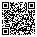
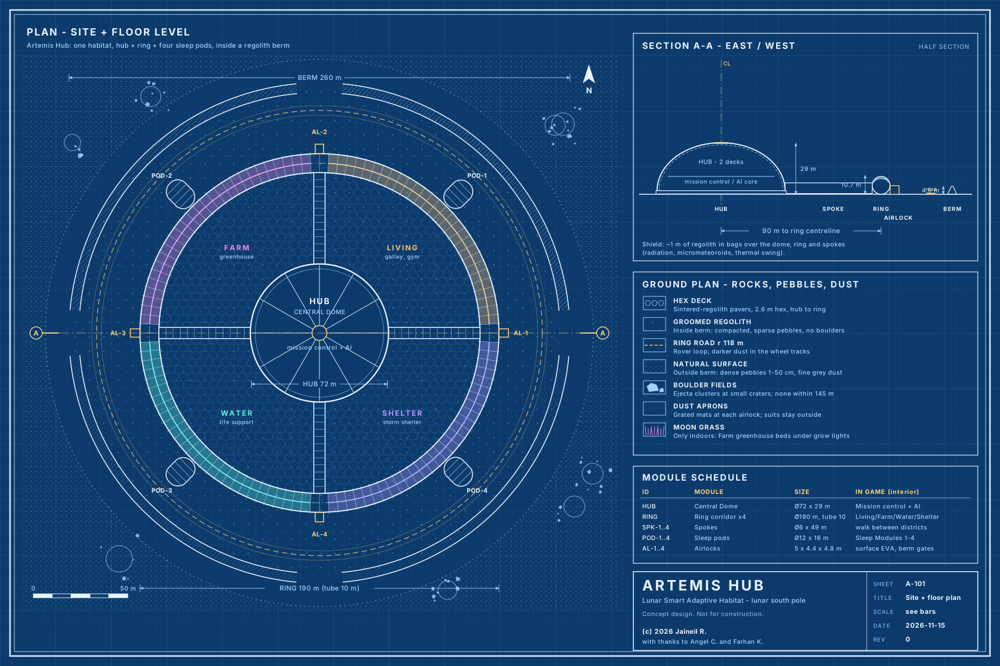
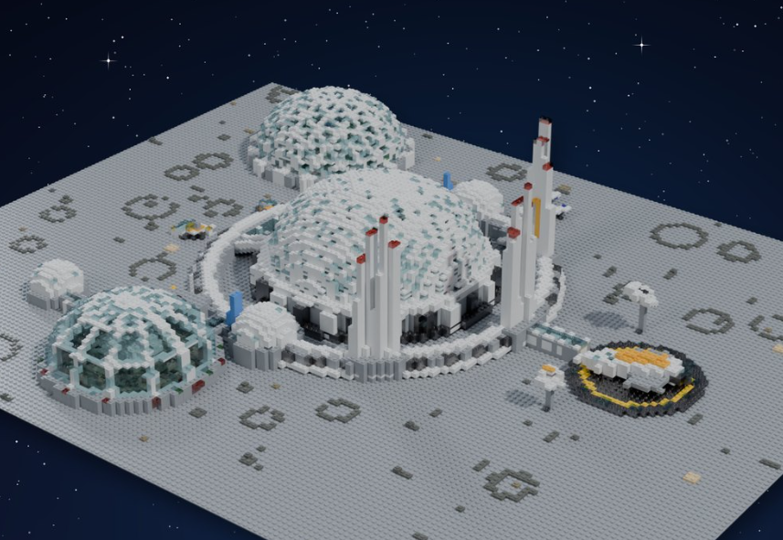
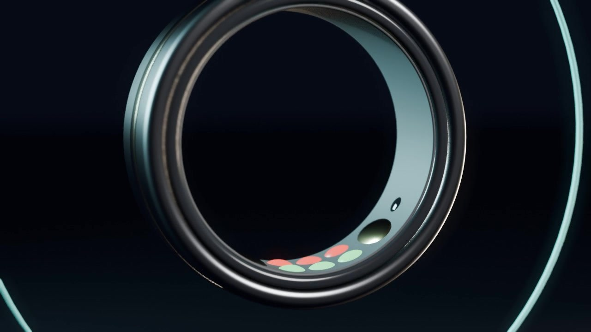
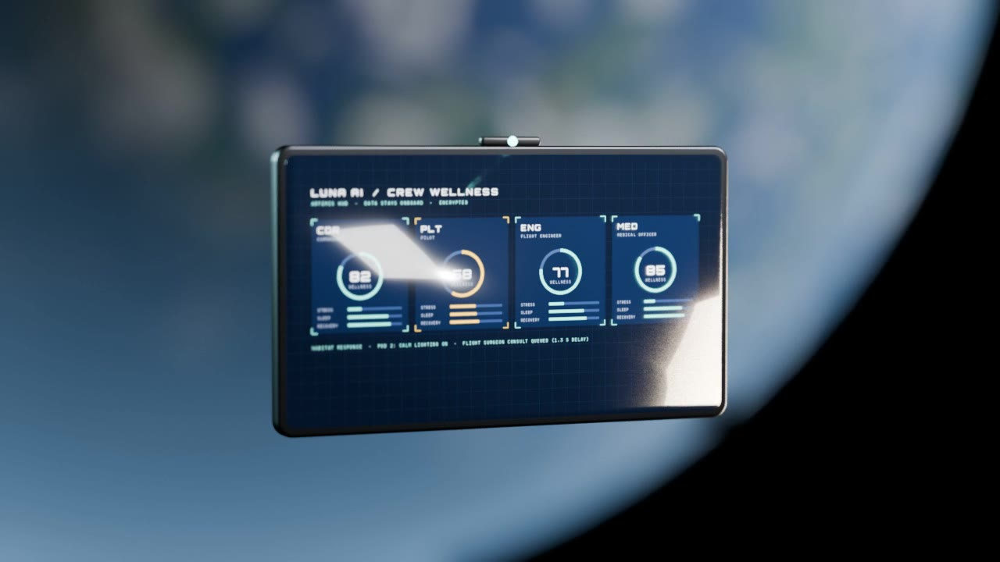
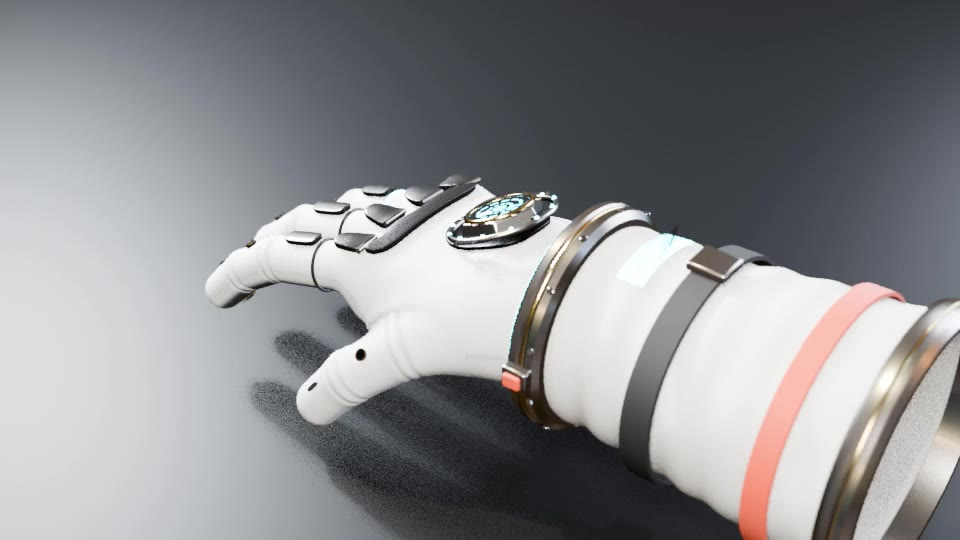
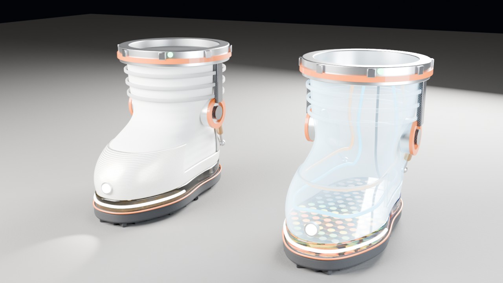

Proof it works
What Our Solution Showed
We built the AI, the habitat and every LUNA-X device, then tried to break them: 70 simulated missions, planted wellness problems, and a full automated playthrough of the habitat story.
60/60
planted problems caught, 70 sims
0.02
unwanted offers / person / week
11.1 kg
total LUNA-X sensor mass, 96 W
0.83
stress-classifier accuracy / F1
Key findings
- A three-step response (quiet change → offer → human) kept unwanted prompts rare.
- Playtests exposed real layout problems (a hatch hidden by a task spot) that we fixed before finalizing.
- Crew trust depends on consent first: every check-in asks before acting, every time.
Future work
- MindRing prototype: bench-test PPG/HRV against a chest strap, then a stress-task study.
- Real NASA use: pilot in an analog habitat (HERA-style crew study) before any flight use.
- We want to train the models on real crew data instead of self-reports, and test it with a bigger crew.
We built this to solve a real problem for a real crew, not to chase a scoresheet — the testing and research above is just us proving it actually works.
From research to a tested build
Research6 problems
›
Planninggame plan
›
DesignBlender CAD
›
Prototypeprint · games
›
Testing70 missions
Extra work we put in
- Tabletop simulation: we ran a full 72-hour scenario with a sensor failure and the CMO off-duty, start to finish.
- Crew interface: working dashboards, voice checklists, and route guidance built for all 12 LUNA-X devices.
What we built: a 1:150 printed habitat kit, a brick-set build, Blender CAD for every device, Unity/Godot VR games, and the full Artemis Hub simulated in Unreal.
Ethics & limits
Trust Is the Design Requirement
On an 18-month mission nobody can walk away from the system, every tension became a built-in limit. Eight hard limits, enforced in code:
- Never share one person's mental-health data with another crew member without consent.
- Never override a refusal; only a human (the CMO) may follow up.
- Never touch medical, medkit protocols or life support (air, hatches, power).
- Never alert Mission Control about someone before that person is told.
- Only reviewable changes: light, sound, temperature or scent, never irreversible ones.
- No cameras or microphones in pods, bathrooms, the VR retreat or family-call booth.
- A human reviews the system at least every 7 days, or the AI drops to Tier 1.
- Public indicators never show anyone's mood unless they choose to share it.
Meet the team
JR
Jaineil R.
PM · Lead Designer · Programmer

WebsiteEvery game, model & paper
LUNA-XAll 12 devices, films, 3D

GitHubSource, CAD, print kits
NASA HUNCH 2026–27
Project ARES
Lunar Smart Adaptive Habitat
one habitat · one AI · twelve LUNA-X devices
A home for four astronauts on the Moon: an AI that notices when someone is struggling, and the full LUNA-X ecosystem that carries that care onto the crew.
- Team
- Project ARES
- Group partners
- Jaineil R. · Angel C. · Farhan K.
- Advisor
- Mrs. Anjali Wahi
- School
- PCTVS STEM Academy, Wayne, NJ
Problem & solution
One Habitat That Looks After Its Crew
Isolation, poor sleep, cramped rooms and the same faces every day wear crews down. NASA's Human Research Program counts behavioral health among the key risks of long missions. On the Moon, Earth is 1.3 seconds away — a missed early warning costs sleep, performance and safety.
Five layers, one system
- 1 · Artemis Hub habitat. One main dome, four work modules, five private sleep pods, regolith-shielded.
- 2 · LUNA crew-health AI. Nine sensors, six conditions, a personal 14-day baseline, a three-tier response.
- 3 · LUNA-X devices. All twelve wearables carry the AI's care onto the crew — see every one at right.
- 4 · Adaptive environment. Light, sound, airflow and a second social space change, all reversible in seconds.
- 5 · Ethics built in. Eight hard limits in code; no override of a refusal; the person is always told first.

Floor-plan blueprint

Brick-set build
6
crew conditions tracked: anxiety, mood, conflict, fatigue, autonomy loss, monotony
4 crew
for the 18-month mission; each baseline is personal, not population-wide
1.3 s
each-way delay to Earth; the habitat must decide on board
12
LUNA-X devices carrying the AI's care onto the crew
Objectives & success
Detect early · respond with environment first, never force · keep a human in charge · fit real mass/power limits. Success: problems caught days earlier than self-report, fewer sleepless nights, almost no unwanted alerts, crews feel in control of their own data.
Habitat modules: Main dome · Command/Comms · Recreation/Commons · Maintenance/Robotics · Hygiene 2 · Medical/Storm shelter, in a ring around the shared dome.
The LUNA AI system
Notices Early. Offers, Never Forces.
LUNA is the crew-health AI at the center of the habitat. It reads nine sensors, compares every reading only to that person's own 14-day baseline, and blends 4–6 signals so one noisy reading can never trigger action alone.
Nine sensors
- Heart-rate variability
- Skin conductance
- Sleep architecture
- Voice prosody
- Facial action coding
- Movement / proximity
- Cortisol patch
- CO₂ / air quality
- Task performance
Three-tier response
Tier 1 · SilentHabitat log only; nothing announced, nothing secret.
Tier 2 · OfferA gentle offer in plain words, Yes or No. "No" stops it at once.
Tier 3 · HumanTold first, then the Flight Surgeon or Mission Control.
Confidence gate
Each tier only fires once the model's confidence crosses 0.35 / 0.55 / 0.75, held over a persistence window — so a single bad night never escalates on its own.
NASA relevance
Built for Artemis-era south-pole missions: behavioral health, human factors and crew autonomy when Earth is 1.3 seconds away.
Data stays onboard
Raw sensor streams never leave the habitat or a person's own device. Only a tier level and a reason, not the raw signal, ever reaches another crew member or Mission Control — and only after the person is told.
Sensors → conditions
| Signal | Watches for |
|---|
| HRV, cortisol | Anxiety, chronic stress |
| Sleep, movement | Fatigue, low mood |
| Voice, face | Conflict, isolation |
| Task, proximity | Autonomy loss, monotony |
The full LUNA-X ecosystem
Twelve Devices. One Connected Crew.

MindRing
Wellness ring: ECG, PPG, skin conductance. Asks before it acts.

LunaCore
Mission watch: timeline, wellness ring, habitat status.

LunaVision
AR glasses: status beside what you look at, hands-free checklists.

LunaLens
2035+ contact-lens concept: suit O₂ and turnaround, edge of vision.

LunaSense
Gesture glove: pinch, swipe, grab; tracks grip and tremor.

LunaEar
AI earbud: morning brief, guided breathing, shelter guidance.

LunaWall
Common-area display: crew board by consent, habitat twin.

Cognitive Helmet
AI, vision, comms and environmental awareness on EVA.

Wellness Glove
Interaction, plant scans, vitals and gesture control.

Mobility Boot
Gait analysis, balance, dust defense, path lighting.

Smart Suit
Full EVA suit: XCore hub, life-support backpack.

Habitat Uniform
Everyday crew jumpsuit with the LUNA-X chest module.
Every device does one job well, keeps raw data on itself, and shares only with consent. Numbers shown are our working targets for the design, built to NASA's own habitat and EVA references.
Solar particle event: everything works as one
LunaCore taps the wrist · LunaEar speaks the route from the shelter's direction · LunaVision draws the blue path · LunaWall counts the crew in · the Smart Suit and Habitat Uniform report dose · the storm shelter's water wall does the shielding.
Why twelve, not one
A ring, a watch or glasses alone misses EVA, sleep and common-area moments. Twelve devices mean the right sensor is always on the right part of the body, in the right place in the habitat, at the right time.
How we built them
Every device started as a Blender CAD model, then an interactive 3D viewer and a launch-film ad on the project site, so each one can be inspected exploded, part by part, before any hardware is built.